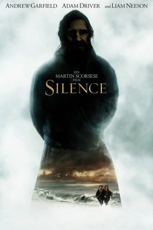

#6778 Silence
Auszeichnungen: für 1 Oscars nominiert
 
 IMDB-Wertung: 7.2 / 10
IMDB-Wertung: 7.2 / 10  Metascore: 0
Metascore: 0 
1638 brechen Pater Sebastião Rodrigues und Pater Francisco Garrpe von Portugal ins für die westliche Welt völlig abgeschottete Japan auf, um der Wahrheit hinter den undenkbaren Gerüchten nachzugehen, dass ihr berühmter Lehrer Cristóvão Ferreira seinem Glauben abgeschworen habe. Nach ihrer Ankunft erleben sie die brutale und unmenschliche Verfolgung der Christen durch die japanischen Machthaber. Angesichts der Ereignisse in einer Gesellschaft, die keine Toleranz kennt und in der der Tod an der Tagesordnung ist, stellt sich Sebastião auf seiner Reise durch das von der Gewaltherrschaft der Shogune zerrissene Land die immerwährende Frage: Wie kann Gott zu all dem schweigen?
Jahr: 2016
Dauer: 161 Minuten
FSK: 12
Land: USA Studio: Paramount PicturesTonspuren: DTS - ,
Untertitel: Deutsch,
Auflösung: 1080p (1920x808) Größe: 8151 MB
Genre: Drama, Abenteuer, Geschichte
Regisseur:  Martin Scorsese
Martin Scorsese
Drehbuch: Jay Cocks
Soundtrack:
Darsteller:
 Andrew Garfield als Rodrigues
Andrew Garfield als Rodrigues Adam Driver als Garupe
Adam Driver als Garupe Liam Neeson als Ferreira
Liam Neeson als Ferreira Tadanobu Asano als Interpreter
Tadanobu Asano als Interpreter Ciarán Hinds als Father Valignano
Ciarán Hinds als Father Valignano- Issei Ogata als Old Samurai / Inoue
- Shin'ya Tsukamoto als Mokichi
- Yoshi Oida als Ichizo
- Yôsuke Kubozuka als Kichijiro
- Diego Calderón als Prisoner Augustinian Friar #2
- Liang Shi als Chinese Businessman, Mr. Chun
- Michié als Tomogi Wife, Mitsu
- Keiko Morikawa als Tomogi Villagers
- Nana Komatsu als Monica, Haru
- Ryo Kase als João, Chokichi
- Hako Ohshima als Christian Prisoner, Kiku
- Julian Song als Guard , uncredited
- Motokatsu Suzuki als Edo Guard , uncredited
- Kaoru Endô als Unzen Samurai, Uneme
- Rafael Kading als Prisoner Augustinian Friar #1
- Matthew Blake als Prisoner Franciscan Friar
- Benoit Masse als Prisoner Augustinian Friar #3
- Tetsuya Igawa als Prisoner Japanese Jesuit
- Panta als Tomogi Villager #1, Yohei
- Takuya Matsunaga als Tomogi Villager #2, Toukichi
- Miho Harita als Ichizo's Wife, Tomi
- Hairi Katagiri als Tomogi Woman, Tsune
- Masayuki Yamada als Tomogi Husband, Kasuke
- Hiroko Isayama als Tomogi Village Woman, Hiro
 Yutaka Mishima als Goto Man #1, Kuro
Yutaka Mishima als Goto Man #1, Kuro- Yasunari Takeshima als Goto Man #2, Haku
- Yuri Ishizaka als Kichijiro Sister at Stake, Tae
- Ryo Sato als Kichijiro Sister #2, Hisa
- Ruo Satô als Kichijiro Father, Kichizo
- Yoriko Dôguchi als Kichijiro Mother, Naka
- Kisetsu Fujiwara als Kichijiro Brother #2, Kichita
- Yasushi Takahashi als Tomogi Villagers
- Sanjûrô Kobayashi als Tomogi Villagers
- Mangorô Satô als Tomogi Villagers
- Jin Maki als Boatman
- Naoto Yokouchi als Goto Swimming Man
- Kansai Eto als Old Goto Man, Mosuke
- Shun Sugata als Samurai Commander
- Kazuhiko Ozaki als Tomogi Hostage #3, Yahachi
- Fumitaka Terai als Christian Prisoner, Tobei
- Hideki Nishioka als Christian Prisoner, Mataichi
- Takahiro Fujita als Inoue's Attendant
- Senmaru als Nagasaki Juggler
- Ryô Fujiwara als Nagasaki Child
- Nobuaki Fukuda als Jeering Man
Datei: X:\2016(N-Z)\Silence (2016, FSK12, 1920x808).mkv seit 30.08.2017
Festplatte: HD 2016(A-Z)
 Es gibt insgesamt 182 Filme in der Gruppe '2016(N-Z)'
Es gibt insgesamt 182 Filme in der Gruppe '2016(N-Z)'